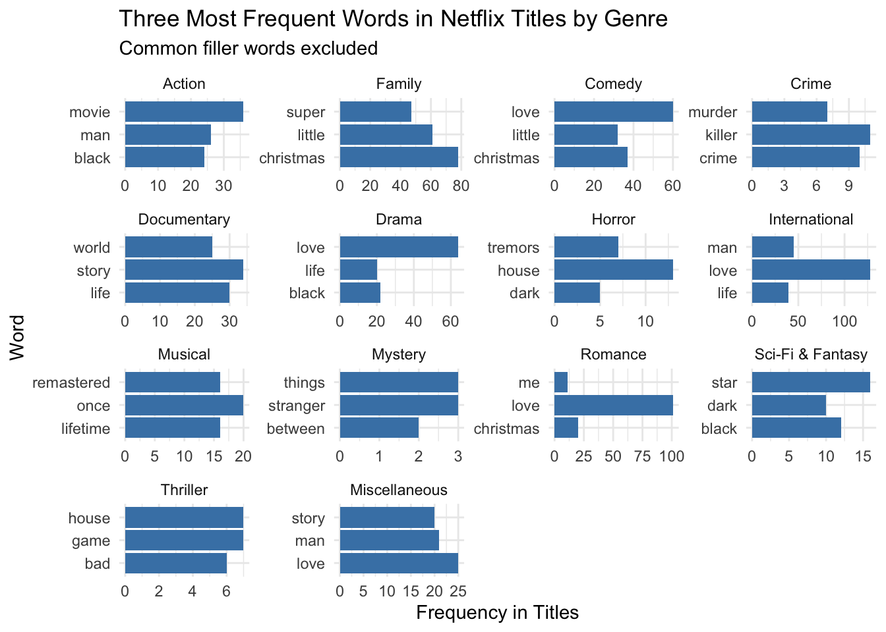
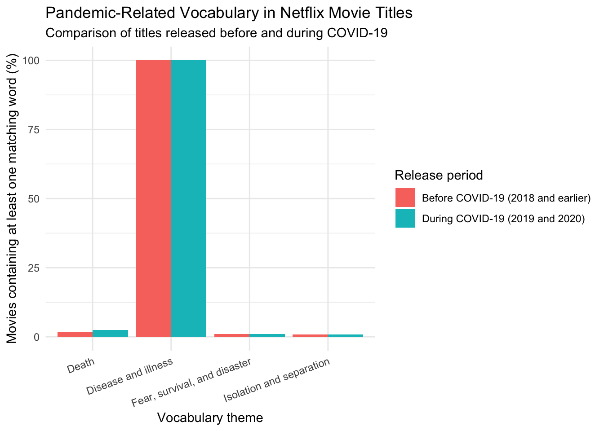

Show the code
library(tidyverse)
netflix_titles <- readr::read_csv('https://raw.githubusercontent.com/rfordatascience/tidytuesday/main/data/2021/2021-04-20/netflix_titles.csv')Neha Dixit
October 13, 2026
Movie and TV show titles are the first things users look at when trying to decide what to watch on streaming platforms like Netflix. While titles are often short, they are meant to draw audiences in, convince them to watch a movie/show, and hint at what the movie might be about. Thus, for my project, I am looking at what types of words occur in titles throughout genres and during different time periods, to see ___.
My first visualization explores the most frequent words that appear in titles across genres. Specifically, I am looking at 14 genres: Action, Comedy, Drama, Horror, Romance, Sci-Fi & Fantasy, Thriller, Mystery, Documentaries, Musical, Crime, Family, International, and Miscellaneous.
Next, I will look at how title vocabulary changed before and during Covid-19. Specifically, I want to see whether words that center around disease, death, isolation, and other pandemic-related imagery were more common in movie titles during Covid as opposed to before.
The data for this analysis come from the TidyTuesday Netflix Titles dataset.
This dataset comes from Kaggle and was uploaded to the website by Shivam Bansal. The dataset consists of movies and TV shows available on Netflix as of 2020. Additionally, the dataset has been collected from Flixable, a third-party Netflix search engine.
This database contains information on 7787 movies/TV shows on Netflix, from each show’s title to their cast, rating, and release date.
#creating a subset of the netflix_titles dataset
cleaned_titles <- netflix_titles |>
select(show_id, type, title, listed_in, release_year) |>
filter(!is.na(title), !is.na(listed_in)) |>
separate_rows(listed_in, sep = ", ") |>
separate_rows(listed_in, sep = "& ")
#adding variables and formatting the cleaned_titles dataset
cleaned_titles <- cleaned_titles |>
mutate(listed_in = str_to_lower(listed_in)) |> #string function 1
mutate(genre = ifelse(
str_detect(listed_in, "action") | str_detect(listed_in, "adventure"), "Action", #string function 2
ifelse(str_detect(listed_in, "comed"), "Comedy",
ifelse(str_detect(listed_in, "drama"), "Drama",
ifelse(str_detect(listed_in, "horror"), "Horror",
ifelse(str_detect(listed_in, "romant"), "Romance",
ifelse(str_detect(listed_in, "sci-fi") | str_detect(listed_in, "fantasy"), "Sci-Fi & Fantasy",
ifelse(str_detect(listed_in, "thriller"), "Thriller",
ifelse(str_detect(listed_in, "myster"), "Mystery",
ifelse(str_detect(listed_in, "docu") | str_detect(listed_in, "nature") | str_detect(listed_in, "science"), "Documentary",
ifelse(str_detect(listed_in, "music"), "Musical",
ifelse(str_detect(listed_in, "crime"), "Crime",
ifelse(str_detect(listed_in, "children") | str_detect(listed_in, "kid") | str_detect(listed_in, "teen") | str_detect(listed_in, "family"), "Family",
ifelse(str_detect(listed_in, "international") | str_detect(listed_in, "british") | str_detect(listed_in, "korean") | str_detect(listed_in, "spanish"), "International",
"Miscellaneous"))))))))))))))#filler words that need to be excluded
stop_words <- c("the", "and", "for", "with", "you", "your", "are", "was", "but", "not", "from", "this", "that", "his", "her", "its", "our", "out", "one", "two", "of", "in", "to", "my", "la", "el", "on", "de", "be")
#splitting the titles into individual words and cleaning them up
title_words <- cleaned_titles |>
separate_rows(title, sep = "\\s+") |> #regex 1
mutate(word = str_to_lower(title), word = str_replace_all(word, "[^a-z]", "")) |> #3rd string function! and 2nd regex
filter(str_detect(title, "(?<![A-Za-z])[A-Za-z]{2,}(?![A-Za-z])"), word != "", !word %in% stop_words #regex 3 and lookaround!
)
#finding the top 3 words for each genre
top_words <- title_words |>
mutate(genre = as.factor(genre)) |>
count(genre, word, name = "frequency") |>
group_by(genre) |>
arrange(desc(frequency), word) |>
mutate(rank = row_number()) |>
filter(rank <= 3) |>
mutate(genre = fct_relevel(genre, c("Action", "Family", "Comedy", "Crime", "Documentary", "Drama", "Horror", "International", "Musical", "Mystery", "Romance", "Sci-Fi & Fantasy", "Thriller", "Miscellaneous"))) #factor function!
#making the plot
ggplot(top_words, aes(x = word, y = frequency)) +
geom_col(fill = "steelblue") +
coord_flip() +
facet_wrap(~ genre, scales = "free") +
labs(
title = "Three Most Frequent Words in Netflix Titles by Genre",
subtitle = "Common filler words excluded",
x = "Word",
y = "Frequency in Titles",
) +
theme_minimal()
For this first visualization, I wanted to see how the most frequent words in movie/TV show titles differed across the various genres I chose. To do so, I sorted each of the 42 genres in the original dataset into 14 genres (Action, Comedy, Drama, Horror, Romance, Sci-Fi & Fantasy, Thriller, Mystery, Documentaries, Musical, Crime, Family, International, and Miscellaneous) and identified the top 3 words that appeared in movie titles with all of these genres. Some of the results I found were expected, such as with the crime genre’s most popular words in titles (“murder”, “killer”, and “crime”) or with the words in the documentary genre (“world”, “story”, “life”). Additionally, there are words that appear throughout many genres, like “love” and “christmas”. However, the visual also shows us that many of the genres have titles with unintuitive words. For example, “black” is a word that shows up in many tites across genres, but I can’t think of why that is.
Ultimately, looking at this visual, it is clear that the connotations of words are considered when creating titles across genres. For example, words like “christmas” evoke feelings of comfort and joy, and these words are most frequently in romance, comedy, and family titles. On the other hand, words like “murder” and “killer” in movie/TV show titles suggest the title will be a crime-related story, and words like “house” and “dark” used in combination can suggest a horror/thriller title.
# Select movies with known release years
covid_titles <- netflix_titles |>
filter(type == "Movie", !is.na(title),!is.na(release_year)) |>
mutate(period = ifelse(release_year <= 2018, "Before COVID-19 (2018 and earlier)", "During COVID-19 (2019 and 2020)")) |>
mutate(disease = str_detect(str_to_lower(title), "\\b(covid|coronavirus|virus|viral|pandemic|epidemic|infection|infected|infectious|disease|plague|outbreak|fever|sick|sickness|illness|ill|contagion|contagious|germ|symptom|cough|flu|influenza|bacteria|bacterial|vaccine|vaccination|quarantine|inject|injection|shot|)\\b"))|>
mutate(death = str_detect(str_to_lower(title),"\\b(death|dead|dying|die|died|dies|funeral|grave|graveyard|morgue|corpse|cemetery|burial|bury|buried|murder|murdered|killer|kill|killed|suicide|fatal|fatality|gore|blood|bloody|massacre)\\b")) |>
mutate(isolation = str_detect(str_to_lower(title),"\\b(alone|lonely|loneliness|isolation|isolated|quarantine|lockdown|trapped|confined|separated|solitude|abandoned|stranded|deserted|hidden|missing|escape|prison|captive|imprisoned|locked|room|cabin|shelter|exile|outsider|cage|lone|lock)\\b")) |>
mutate(fear_survival = str_detect(str_to_lower(title),"\\b(fear|afraid|terror|terrified|panic|nightmare|survive|survival|survivor|apocalypse|apocalyptic|disaster|catastrophe|danger|threat|warning|destruction|collapse|end|extinction|invasion|attack|crisis|emergency|sacrifice|shelter|escape|chaos|doom|doomed|scared|panic|nightmare)\\b"))
#converting the four theme columns into rows
covid_word_counts <- covid_titles |>
pivot_longer(cols = c(disease, death, isolation, fear_survival), names_to = "theme",values_to = "contains_word") |>
group_by(period, theme) |>
summarise(titles_with_words = sum(contains_word))
#counting all movies in each period
period_totals <- covid_titles |>
group_by(period) |>
summarise(total_titles = length(show_id))
#calculating the percentage of movies within each year category containing each theme
covid_word_counts <- covid_word_counts |>
left_join(period_totals, by = "period") |>
mutate(percentage = titles_with_words / total_titles * 100,
theme = ifelse(theme == "disease", "Disease and illness", ifelse(theme == "death", "Death",ifelse(theme == "isolation", "Isolation and separation", "Fear, survival, and disaster")))
)
#making the plot
ggplot(covid_word_counts, aes(x = theme, y = percentage, fill = period)) +
geom_col(position = "dodge") +
labs(
title = "Pandemic-Related Vocabulary in Netflix Movie Titles",
subtitle = "Comparison of titles released before and during COVID-19",
x = "Vocabulary theme",
y = "Movies containing at least one matching word (%)",
fill = "Release period",
) +
theme_minimal() +
theme(axis.text.x = element_text(angle = 20, hjust = 1))